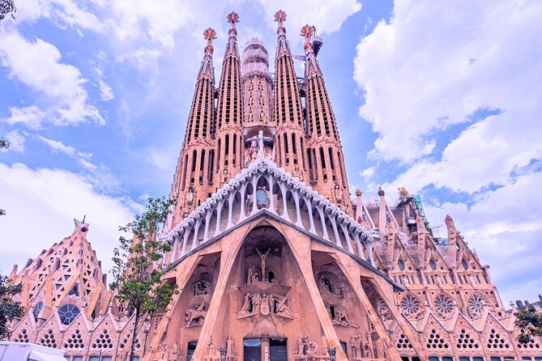
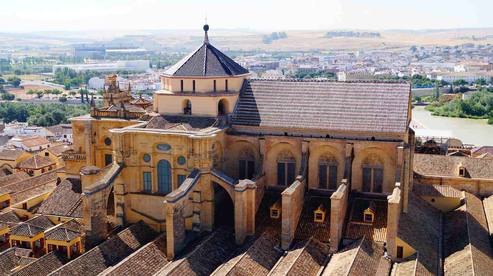
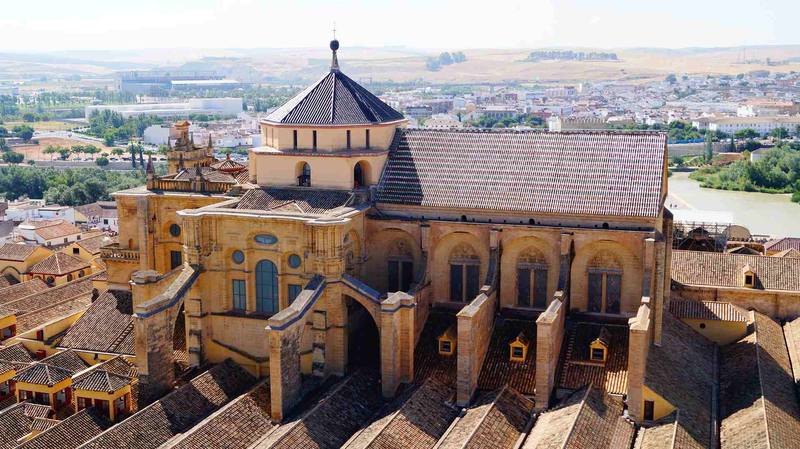
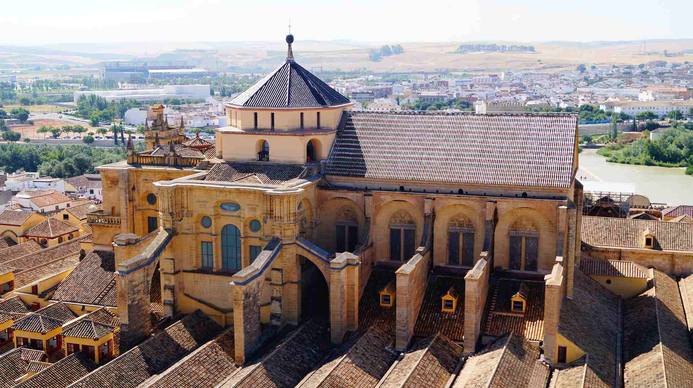

Monuments
Spain is a land of vibrant culture, historic landmarks, and breathtaking architecture. From the majestic Alhambra to the bustling
streets of Barcelona and the timeless beauty of Seville, each monument tells a story of the nation’s rich heritage. Discover the colors,
traditions, and iconic sights that make Spain an unforgettable destination.
SHOW MORE
SHOW MORE

 

